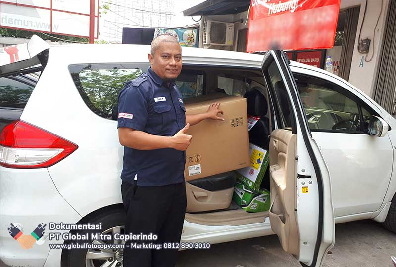

Pertimbangan Mesin Fotocopy untuk Travel Umroh: Ngomongin Efisiensi!
Dulu, waktu travel umroh saya masih kecil, urusan cetak mencetak dokumen itu ribetnya minta ampun. Bayangin, laporan keuangan, perjanjian kerja sama, tiket pesawat jamaah, semuanya dicetak satuan di percetakan. Boro-boro efisien, waktu dan biaya malah habis sia-sia. Rasanya kayak lari di tempat, deh.
Nah, pengalaman pahit itu bikin saya mikir keras. Gimana caranya biar urusan administrasi ini lebih lancar? Jawabannya: mesin fotocopy! Tapi, eits, jangan asal pilih. Ada beberapa hal yang perlu dipertimbangkan, lho.
Pertimbangan Sebelum Memilih Mesin Fotocopy:
- Volume Cetak: Travel umroh butuh cetak banyak dokumen, dari brosur hingga visa. Pilih mesin yang kapasitasnya sesuai agar tidak mudah rusak.
- Fitur Tambahan: Pilih mesin yang bisa scan, print, copy, atau fax sesuai kebutuhan. Jangan beli yang fiturnya berlebihan tapi tidak terpakai.
- Dukungan Teknis: Pastikan penyedia layanan rental memiliki support teknis yang responsif untuk menghindari kendala operasional.
- Biaya Sewa: Bandingkan harga dari beberapa penyedia dan pastikan sesuai dengan budget serta kebutuhan bisnis.
- Lokasi Rental: Pilih tempat rental yang strategis dan mudah diakses untuk kemudahan servis atau penggantian sparepart.
Nah, itu dia beberapa pertimbangan penting sebelum sewa mesin fotocopy untuk travel umroh. Semoga bermanfaat, ya! Ingat, pilih mesin yang tepat bisa bikin bisnis lebih efisien dan menguntungkan. Jadi, jangan sampai salah pilih! 🚀